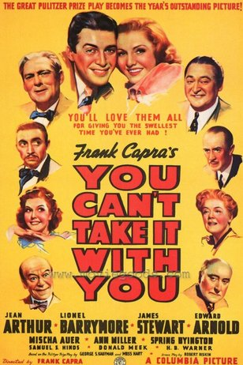
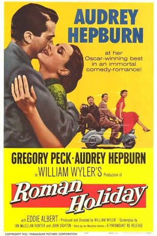

OSCAR
Жанр: Комедия с 1929г. по 1960г.


Название фильма
Год
Колличество оскаров
Скиппи
1931г
4
Три поросенка
1934г
1
Это случилось однажды ночью
1935г
5
Сон в летнюю ночь
1936г
4
Сто мужчин и одна девушка
1938г
5
С собой не унесешь
1939г
7
Мистер Смит едет в Вашингтон
1940г
1
А вот и мистер Джордан
1942г
4
Идти своим путем
1945г
6
Чудо на 34-й улице
1948г
3
Тихий человек
1953г
2
Римские каникулы
1954г
3
Вокруг Света за 80 дней
1957г
5
Жижи
1959г
8
В джазе только девушки
1960г
1
Назад
Ильин Андрей Юрьевич ИКБО-20-19